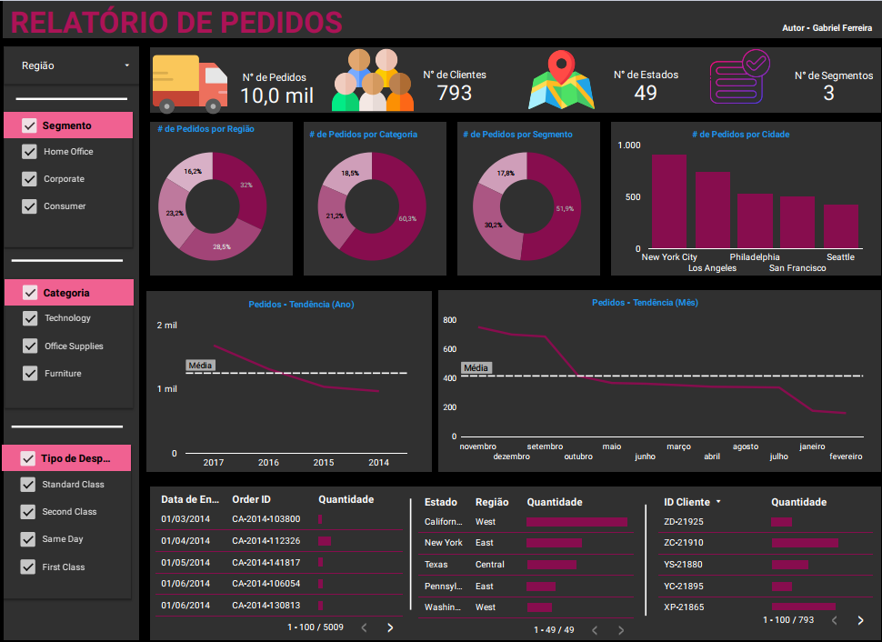
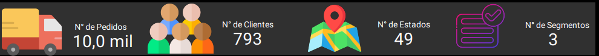
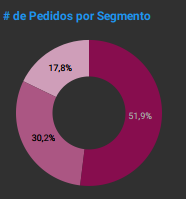
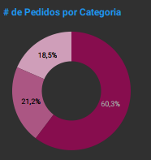
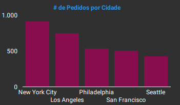
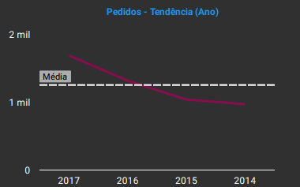
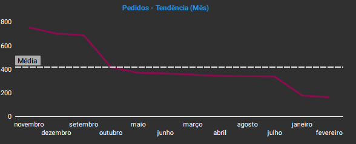

Projeto: Dashboard de Pedidos - Análise de Vendas e Logística
Introdução
Este projeto apresenta um Dashboard de análise de pedidos, desenvolvido no Looker Studio. O principal objetivo é fornecer uma visão abrangente e detalhada sobre o volume de pedidos, a base de clientes, a distribuição geográfica das vendas e as tendências de consumo ao longo do tempo. Este painel visa monitorar o desempenho de vendas, identificar mercados promissores, otimizar a cadeia de suprimentos e aprimorar a experiência do cliente através da análise de tipos de despacho e localidades.
Estrutura do Projeto
O dashboard é organizado para oferecer diferentes perspectivas sobre os dados de pedidos:
- Visão Geral de Pedidos e Clientes: Indicadores chave sobre o número total de clientes, pedidos, estados atendidos e segmentos de mercado.
- Distribuição de Pedidos por Segmento: Análise da participação de diferentes segmentos de clientes no volume total de pedidos.
- Distribuição de Pedidos por Categoria de Produto: Ranking das categorias de produtos mais vendidas.
- Desempenho por Cidade: Identificação das cidades com maior volume de pedidos.
- Tendências Temporais de Pedidos: Gráficos de linha que mostram a evolução dos pedidos ao longo dos meses e anos.
- Análise de Tipo de Despacho: Distribuição dos pedidos pelos diferentes métodos de entrega.
- Dados Detalhados de Pedidos: Uma tabela com informações granulares sobre cada pedido, incluindo Order ID, data, tipo de despacho, quantidade, estado, região e ID do cliente.
Tecnologias Utilizadas
Para a construção deste dashboard, a ferramenta empregada foi:
- Looker Studio: Utilizado para conectar a fonte de dados, realizar as transformações e modelagens necessárias, e construir os visuais interativos que compõem o dashboard e, com o design e o layout sendo desenvolvidos diretamente no ambiente do Looker Studio.
Processo de ETL (Extração, Transformação e Carregamento)
O processo de ETL para o Dashboard de Pedidos no Looker Studio foi executado para garantir a qualidade e a prontidão dos dados para análise:
- Extração: Os dados brutos foram extraídos de uma fonte tabular em
.csv, contendo informações detalhadas sobre cada transação, cliente, produto, localidade e método de envio. - Transformação: No ambiente do Looker Studio, foram realizadas as transformações necessárias para preparar os dados para a visualização. Isso incluiu:
- Tratamento de dados, como padronização de campos e correção de valores.
- Criação de campos calculados para métricas como o número de pedidos e clientes.
- A modelagem de dados foi configurada para estabelecer as relações adequadas entre as dimensões (como região, segmento, categoria) e as métricas (como número de pedidos e clientes).
- Carregamento: Após a conexão e as transformações, os dados foram carregados no modelo de dados do Looker Studio, tornando-os prontos para serem explorados através da criação de gráficos, tabelas e mapas interativos.
Dashboard
O dashboard apresenta um layout claro e conciso, com uma organização que facilita a compreensão das métricas mais importantes de pedidos e clientes. A interface combina cartões de KPI para uma visão rápida dos totais, gráficos de rosca e barras para distribuições percentuais e rankings, e gráficos de linha para tendências temporais. A interatividade é um recurso central, permitindo a filtragem por diferentes dimensões (região, segmento, categoria, cidade), o que facilita a investigação detalhada de qualquer aspecto dos dados de vendas e logística.

Insights
A análise dos dados apresentados no dashboard revelou insights valiosos sobre a gestão de pedidos e o comportamento de compra:
- Visão Geral do Volume de Negócios:
- O dashboard mostra uma operação de grande escala, com um Total de Clientes de 793.
- O volume de Pedidos atingiu 10 mil.
- A abrangência geográfica é significativa, com o atendimento em 49 Estados.
- Os pedidos estão distribuídos em 3 Segmentos de mercado.

- Pedidos por Segmento:
- O segmento Consumer (Consumidor) domina o volume de pedidos, representando 51,9% do total.
- Home Office e Corporate (Corporativo) contribuem com 17,2% e 30,2%, respectivamente.
- A forte concentração no segmento Consumer indica a importância estratégica desse público para o volume de vendas.

- Pedidos por Categoria de Produto:
- Office Supplies (Materiais de Escritório) lidera com 60,3% dos pedidos.
- Technology (Tecnologia) e Furniture (Móveis) seguem com 21,2% e 18,5%, respectivamente.
- Isso aponta para as categorias de produtos que mais impulsionam o volume de transações, auxiliando na gestão de estoque e campanhas de marketing.

- Pedidos por Cidade:
- New York City se destaca como a cidade com o maior volume de pedidos.
- Outras cidades importantes incluem Philadelphia, Seattle, Los Angeles e San Francisco
- Essa análise geográfica é crucial para o planejamento logístico e para identificar mercados-chave.

- Tendências Temporais de Pedidos:
- Os gráficos “Pedidos - Tendência (Mês)” e “Pedidos - Tendência (Ano)” permitem visualizar a evolução do volume de pedidos ao longo do tempo.
- A análise anual mostra dados de 2014 a 2017, revelando padrões de crescimento ou sazonalidade.

- A tendência mensal, com picos e vales em diferentes meses, oferece insights para o planejamento operacional e de marketing ao longo do ano.

Considerações
A partir dos insights obtidos, algumas considerações importantes surgem:
- Foco no Consumidor: A dominância do segmento Consumer reforça a necessidade de estratégias de marketing e atendimento focadas nesse público.
- Otimização de Estoque e Compras: As categorias de produtos mais populares (Office Supplies, Technology, Furniture) devem ter seus estoques cuidadosamente gerenciados para evitar rupturas e maximizar as vendas.
- Planejamento Logístico e Expansão Geográfica: A identificação das cidades e regiões de alto volume de pedidos é crucial para otimizar rotas de entrega e para avaliar potenciais de expansão em novas localidades.
- Eficiência de Entrega: A análise dos tipos de despacho pode guiar a otimização dos serviços de entrega, buscando maior eficiência e custo-benefício.
Conclusão
O Dashboard foi uma ferramenta analítica eficaz que transformou dados brutos de transações em inteligência acionável para a gestão de vendas e logística. Sua principal contribuição residiu na capacidade de:
- Fornecer uma visão clara do volume de negócios e da base de clientes.
- Identificar padrões de consumo por segmento e categoria de produto.
- Analisar tendências temporais e a distribuição geográfica dos pedidos.
- Demonstrar a proficiência em utilizar o Looker Studio para construir análises robustas e intuitivas.